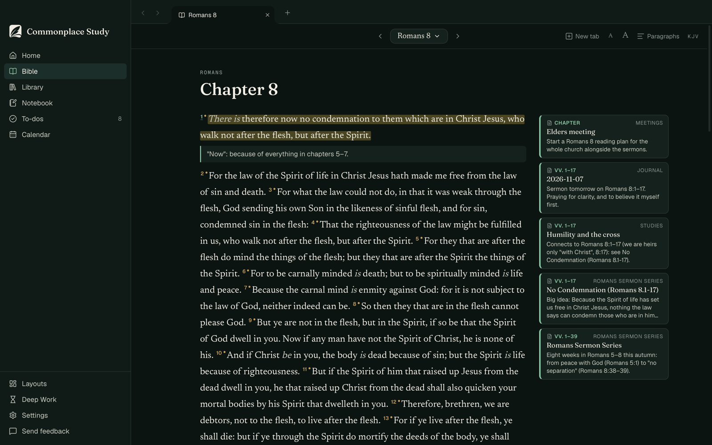
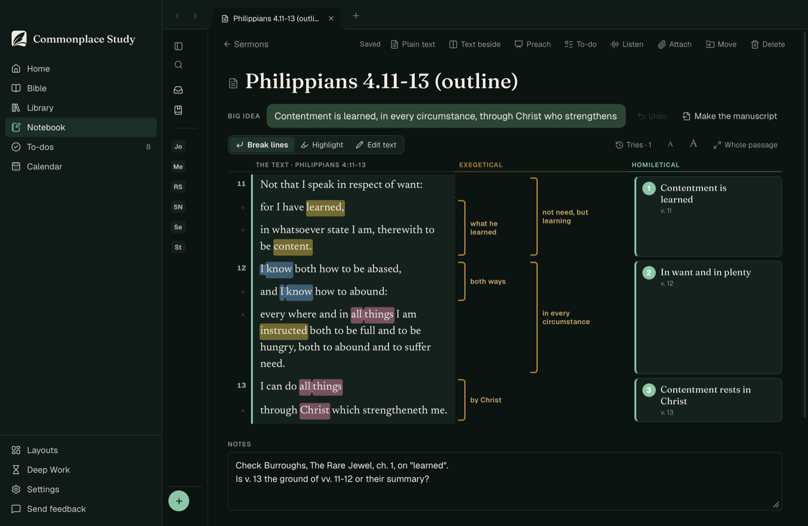
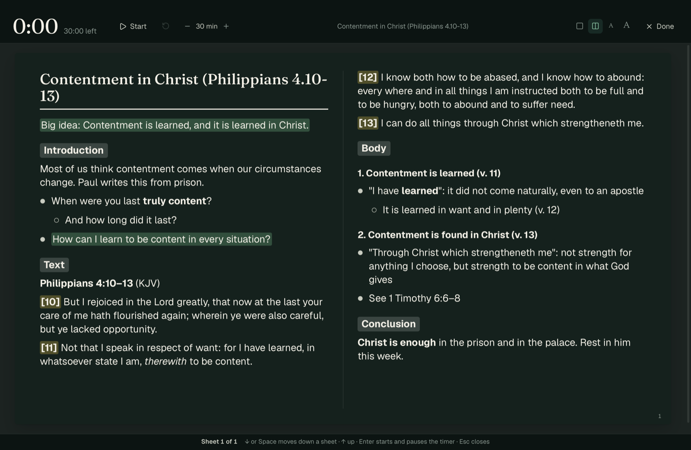
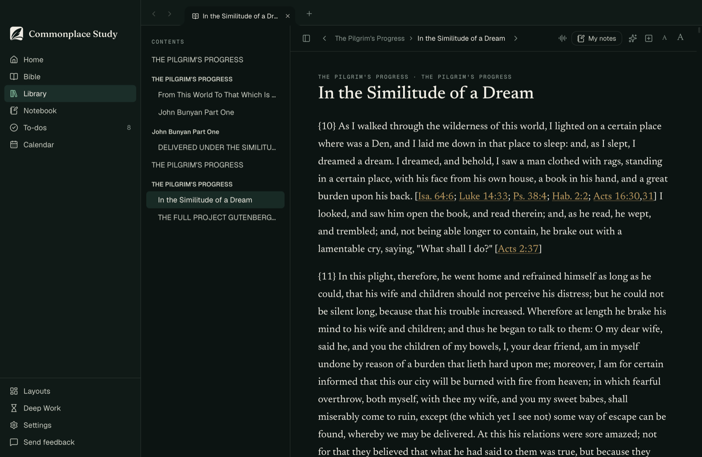
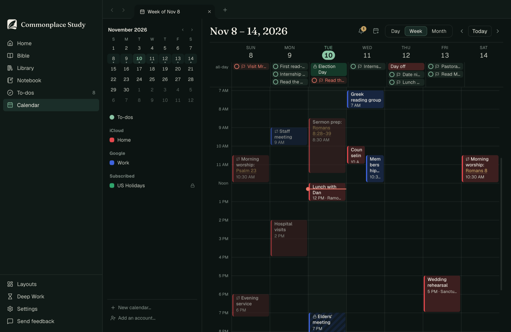

Commonplace Study
Search a passage. See everything you've ever read, written, or preached on it.
Notes, books, to-dos and calendar for pastors, connected by Scripture.
Chapter 8
28And we know that all things work together for good to them that love God, to them who are the called according to his purpose. 29For whom he did foreknow, he also did predestinate to be conformed to the image of his Son, that he might be the firstborn among many brethren. 30Moreover whom he did predestinate, them he also called: and whom he called, them he also justified: and whom he justified, them he also glorified.
Not that I speak in respect of want: for I have learned, in whatsoever state I am, therewith to be content.
for I have learned, in whatsoever state I am, therewith to be content.
12I know both how to be abased, and I know how to abound:
every where and in all things I am instructed both to be full and to be hungry.
13I can do all things through Christ which strengtheneth me.
Contentment in Christ
Big idea: Contentment is learned, and it is learned in Christ.
Introduction
Most of us think contentment comes when our circumstances change. Paul writes this from prison.
● When were you last truly content?
○ And how long did it last?
Text
[11] Not that I speak in respect of want: for I have learned, in whatsoever state I am, therewith to be content.
[12] I know both how to be abased, and I know how to abound.
[13] I can do all things through Christ which strengtheneth me.
Body
1. Contentment is learned (v. 11)
● It did not come naturally, even to an apostle
2. In want and in plenty (v. 12)
● Paul had been in both
○ Abased, and abounding
3. Contentment rests in Christ (v. 13)
● Not strength for anything I choose
● Strength to be content in what God gives
Conclusion
Christ is enough in the prison and in the palace. Rest in him this week.
Your sermons, books and notes, beside the passage.
Everything on a passage
Open a chapter and your sermons, notes and books on it are there beside the verses.
Write "Rom 8:28" anywhere and it's linked.

From the text to the pulpit
Outline a passage with brackets and sermon points. Turn it into a manuscript. Preach from it with a timer.


Your books, searchable
Read your PDFs and EPUBs. Every verse a book quotes is found and linked.

Your week in one place
Notes, to-dos and your calendar side by side: Google, Outlook or iCloud.

Your notes are yours
Every note is a plain .md file in a folder you choose. Open it in any app, today or in twenty years.
- Your notes stay on your computer
- Works offline
- Nothing sent to us
Use Claude? Commonplace Study works with your own, so it can search your notes and books when you ask. It's off until you set it up.
- Notebook
- No Condemnation (Romans 8.1-17).md
- Peace with God (Romans 5.1-11).md
- Elders meeting.md
- Baxter on the work of the pastor.md
- Tasks
- Church.md
--- passage: "Romans 8:1–17" status: draft --- # No Condemnation **Big idea:** Because the Spirit of life has set us free in Christ Jesus, nothing the law says can condemn those who are in him (Romans 8:1–2).
Every note, every task, every text — all connected.
For Mac and Windows. Free while it's in testing.
Made by a pastor-in-training, for pastors. It's still in testing: tell me what's missing.
Get update emails
A short note when there's something new in Commonplace Study. No more than that; unsubscribe with one click.
You'll get one email to confirm. Your address is kept by Buttondown, only for these emails; see the privacy policy.